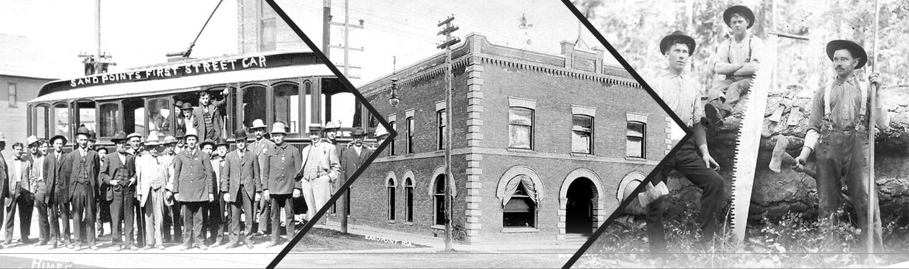
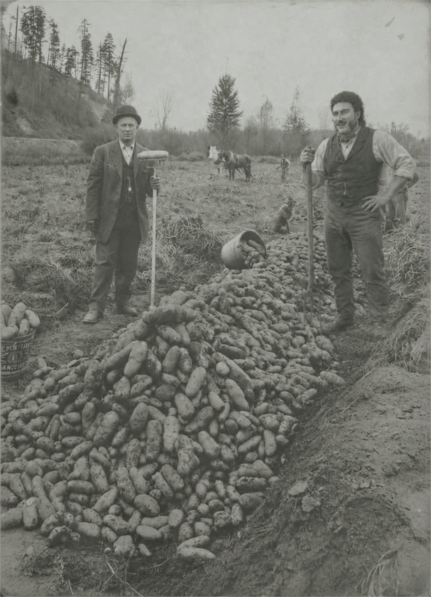
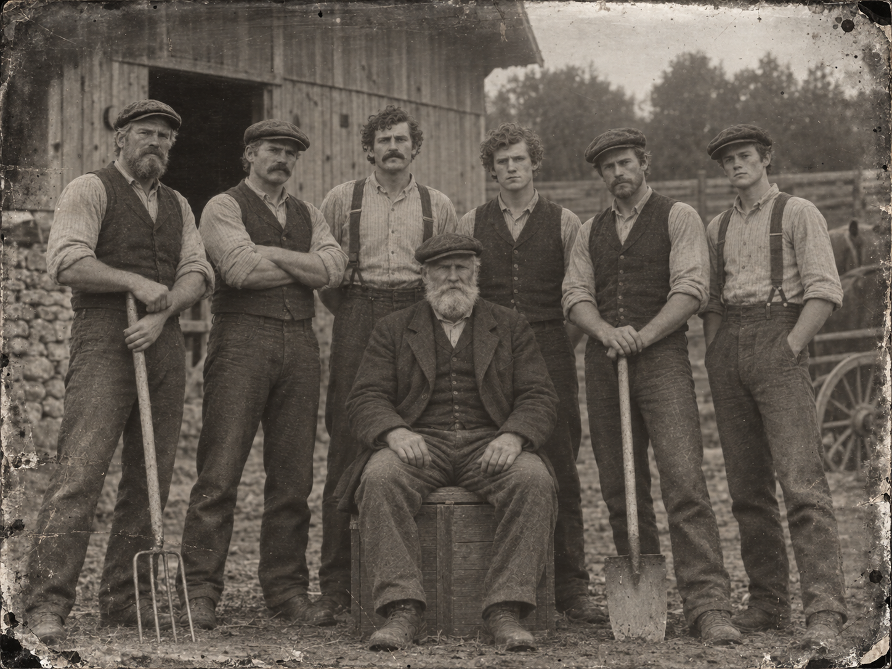
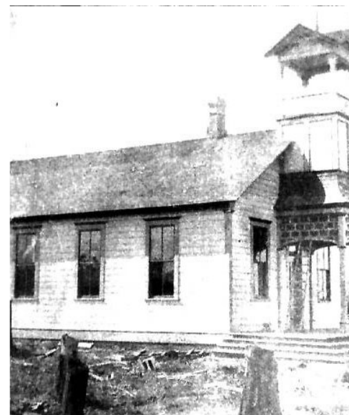
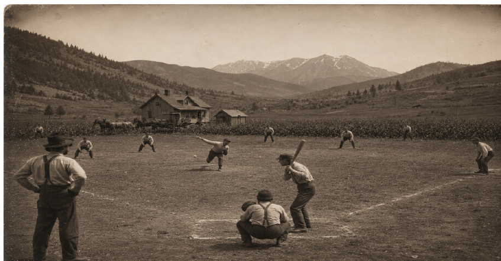
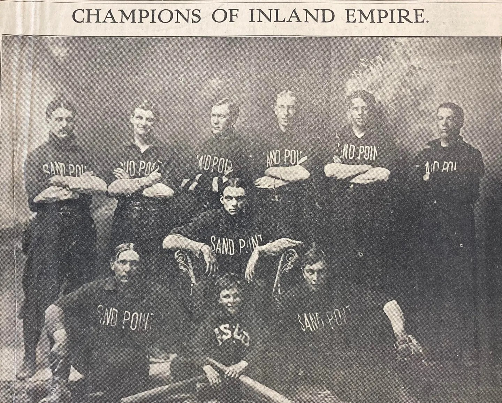
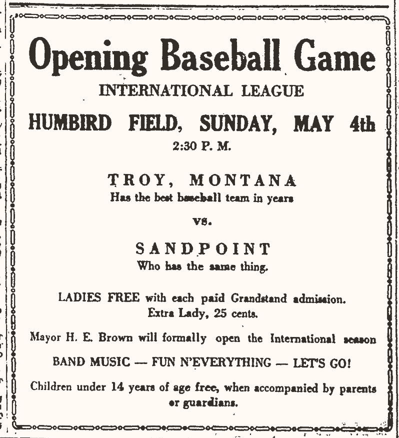
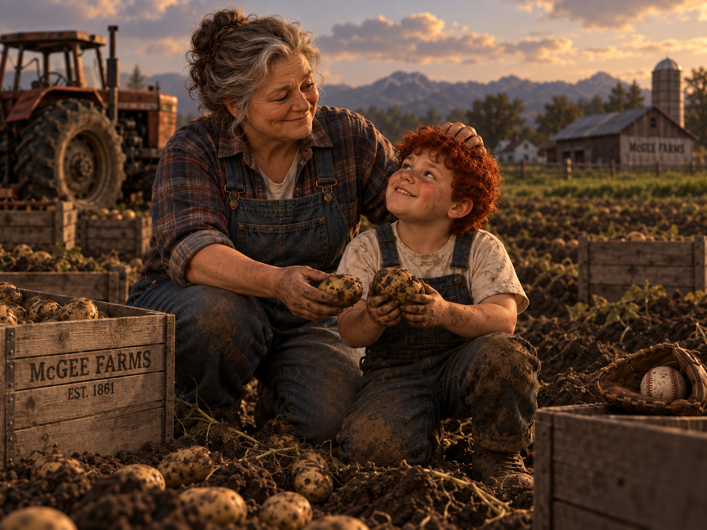
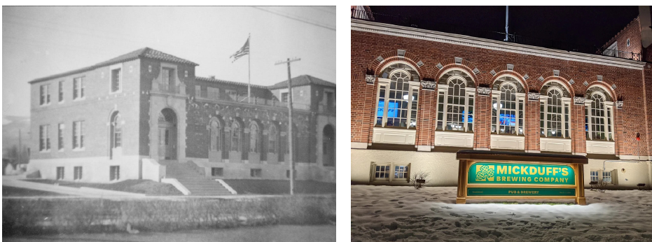
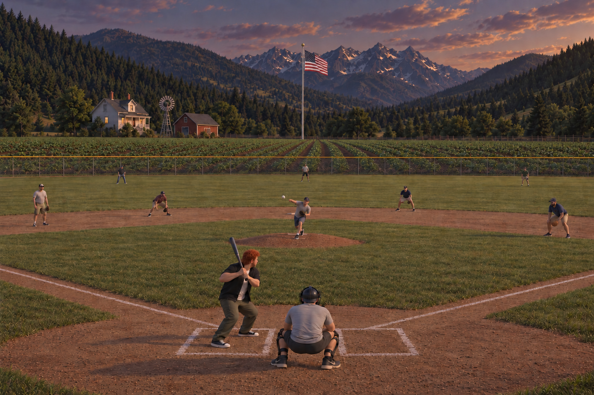

Jump to a chapter
Once you hear the name “Tater Tot” McGee, you expect a silly nickname. Then you meet him and discover it’s something much bigger. It’s a name rooted in Irish tragedy, Idaho potato farming, and more than 160 years of baseball history.
To understand the nickname is to understand the McGee family story.
The Irish Famine Origins (1848–1850)
This story starts in 1848 in Skibbereen, County Cork, Ireland, at the height of the Irish Potato Famine. About one million people died from starvation, typhus, and other famine-related diseases. The famine also led to a mass emigration of Irish people.
The McGee family was hit particularly hard.
McGee’s six-times-great-grandparents, Seamus and Siobhán, not only lost their farm but, more tragically, lost three of their seven children. Five-year-old twins Sheila and Sinead contracted typhus and died. Six months later, they lost two-year-old Sean to cholera.
In 1849, they had no choice but to leave Ireland. They arrived in the United States in 1850, just six of the estimated 200,000 Irish immigrants that arrived that year.
New York Years and the Move West (1850–1861)

During their time in New York, Seamus and Siobhán had four more children. With four additional mouths to feed and one on the way and work proving difficult to find, Seamus heard news of gold discoveries in Idaho in early 1861 and saw another opportunity to start over.
The family left New York in May 1861 and arrived five months later in what would eventually become Bonner County, Idaho.
They were now a family of 11. During the journey, Siobhán gave birth to their twelfth child, a son named Sullivan.
Upon arrival, Seamus Sr., Seamus Jr., and Shane all began working in the mining industry. Thanks to the Homestead Act of 1862, the family was able to claim 160 acres of land in what would eventually become Sandpoint.
Farming, Growth, and Potato Legacy (1860s–1910)

Over the next 40 years, the McGee men worked in the three major industries of northern Idaho at the time: mining, timber, and the railroad. All the while, they continued working their land.
Seamus Sr. always felt a sense of loss after being forced to abandon his family farm in Ireland. He spent those four decades working the land and teaching his family how to grow potatoes. Eventually, he was able to produce enough potatoes and other crops to feed his family.
That gave Seamus Sr. everything he had ever wanted: a large, healthy family and a thriving farm.
As each of his children married and started families of their own, they built homes on the farm. Seamus Sr. was content with life as it was. His children, however, thought bigger.
Tired of breaking their backs to make money for someone else, they wanted the farm not only to sustain the family but also to generate a profit. They worked for years toward that goal.

Eventually, they began partnering with other local farms. But it wasn't until they worked with A.J. Kent in 1908 that the dream of a commercially viable potato operation became reality.
Seamus Sr. was thrilled—not because of the money, but because he knew his family would not only survive but thrive.
He passed away peacefully in 1910 at the age of 90. He was surrounded by the love of his life, Siobhán, their nine surviving children, 50 grandchildren, and 10 great-grandchildren.
Siobhán died six months later.
Education and Early Community Building (1886–1894)

The McGees weren't just pioneers in the world of potatoes.
Siobhán and their eldest daughter, Saoirse, were instrumental in bringing education to the Sandpoint area. What began as a necessity—teaching the children on the family farm—eventually expanded to educating other children throughout the community.
As the population grew, they were forced to find larger spaces for classes. Lessons were held wherever room could be found. Some of the earliest classes in pioneer-era Sandpoint took place in makeshift locations, including the upper floor of the local railroad depot and other buildings along the tracks.
In 1894, thanks to a land donation from the Farmin family, the area's first permanent schoolhouse was built.
Saoirse, who never had children of her own, continued teaching there well into her seventies.
Stephen McGee and the Birth of Baseball in the Family (1861–1895)

On a stop during the McGee family's arduous journey across the country, nine-year-old Stephen’s life would be changed forever.
In a nearby field, Stephen saw some boys playing a strange but familiar game. It looked like something his father had once taught him—the British game of rounders—but it was also different. The need to understand this game was stronger than Stephen’s usual shyness.
He ran over to the boys and asked if he could join their odd yet familiar game. His parents couldn’t believe their eyes. They had never seen their son, whose shyness had always prevented him from making friends back in New York, fit in so easily.
They watched as Stephen played with the boys as if he had known them forever.
From that moment forward, Stephen and baseball were inseparable.
Stephen would constantly disappear during chore time on the farm, often found hitting anything round with a stick. His favorite targets were rotten vegetables. As frustrating as this was for his parents, they were somewhat lenient—baseball was what had brought their painfully shy son out of his shell.
Any free time was spent playing baseball on a dirt patch on the farm, largely because of Stephen. Whenever a new family arrived to establish a homestead, Stephen would inevitably show up, looking for other children to play his game with.
As an adult wherever Stephen worked, he organized games—whether in mining camps, lumber camps, or railroad camps. This became easier as more men arrived from the East, where baseball was beginning to spread rapidly.
Like his siblings, Stephen eventually married his love, Sally, and was given his own portion of the family farm. He built a home there, but unlike his brothers and sisters, he also built something else: a small baseball field.
More than a century before Ray Kinsella would build a diamond in an Iowa cornfield in Field of Dreams so “they would come,” Stephen McGee had already built one in Idaho, on a potato farm, simply for the love of the game.
That field still exists in the same location today. Stephen McGee is as much a part of Sandpoint’s baseball identity as he is of its agricultural history.
Early Baseball in Sandpoint (1895–1930s)

Although the other McGee children and their descendants continued to play baseball in their leisure time, none were as deeply devoted to the game as Stephen.
On the Fourth of July in 1895, the newly formed Sandpoint Base Ball Association played its first game. That day, they faced the Hope team and battled to an 18–18 tie. Two weeks later, Sandpoint lost to Hope 29–20.
Two of Stephen’s sons, Padraig and James—Tater’s five-times-great-grandfather—played in that inaugural game and were instrumental in forming the team.
Forty-three-year-old Stephen watched proudly as his sons took the field. He never missed a game they played.
Stephen himself continued playing on his own field at home well into his sixties.
In August 1895, the Sandpoint team and its fans—including several women—boarded the Hustler and traveled downriver to play Seneacquoteen. Stephen, his wife, and their four other children were among those making the trip.
It was a lopsided match, with Sandpoint winning 60–13, but the host team was gracious, and everyone enjoyed the experience. These small-town teams continued competing well into the 1930s, with Sandpoint rosters often featuring at least one member of the McGee family.

As time passed, some of Stephen’s descendants stayed on the farm while others moved away—to other parts of Idaho, across the United States, and even back to County Cork, Ireland.
But baseball remained a constant thread running through the family.
The Meaning of “Tater Tot” (2004–2022)

Which brings us back to the “Tater Tot” nickname and its many meanings.
If you ask Tater how he got the name, he’ll jokingly stand up, point to his stocky 5-foot-1, 201-pound frame and say, “I am a human Tater Tot.” But he knows the real meaning runs much deeper.
His grandmother Elizabeth was the first person to call him that. As soon as she saw her chunky baby grandson, she began calling him her “little Tater Tot.” Tater and his grandmother shared an instant bond. He became her shadow on the farm, and she taught him everything she knew about the McGee family history.
Most kids would try to shed a nickname like that as they grew older. Tater Tot was not most kids. Because of his grandmother, he realized early on how deeply the name was rooted in the fabric of the McGee legacy.
“Two things are hardwired in the McGee DNA: growing taters and hitting taters,” McGee says.
“Getting rid of that name would be like turning my back on all the McGees who came before me.”
I asked him why he wears 0 even though I was pretty sure that I already knew the answer. He laughed and pointed at himself again. “Plus, you know this,” he adds, tapping his frame as he laughs. The number 0 he wears on his jersey, he explains, reflects the same idea—“0 looks like a tater tot.”
College Career and the Draft Path (2022–2025)
Tater is now on the verge of accomplishing something even Stephen could never have imagined.
After a standout high school career that culminated in an Idaho 5A state championship, Tater Tot McGee was selected 27th overall by the New York Yankees in the 2023 MLB Draft. Many people felt he had a difficult decision to make: go pro or go to college.
But education has always been important to the McGees. Ever since Siobhán and Saoirse began teaching in those early one-room schoolhouses, learning has been part of the family identity. So Tater chose college.
He attended Fresno State.
He jokes that he chose Fresno State because, like his high school team, they were also the Bulldogs and wore pinstripes—so the family wouldn’t have to buy new gear.
The Fresno State campus is only two and a half hours from where Ronald McGee grew up, a cousin who was drafted by the Seattle Mariners in 1978. Ronald made it as high as Triple-A Spokane, appearing in seven games in 1980 before his final season in professional baseball. He later became a scout and eventually a rookie ball coach within the Mariners organization. Ronald remained in Washington, started a family, and—unsurprisingly—began a potato farm in Mount Vernon, about an hour from Seattle.
Although the McGees remained deeply involved in baseball, primarily at the youth level, Tater’s grandfather Cillian helped form the official Sandpoint Little League in 1984. That league became a foundation for the family’s continued connection to the game, with Tater’s father, two uncles, and one aunt all playing in it, along with many cousins. Tater and his own siblings also played there.
A cousin even played on the 1999 Boise team that reached the Little League World Series.
No one since Stephen had been as obsessed with baseball as Tater. Once his parents realized this, they nurtured it—just as Stephen’s parents had done over 160 years earlier.
Like Stephen, Tater often found ways to escape chores, and just like Stephen, baseball became the reason. The difference was that Tater didn’t have to sneak behind a barn to hit rotten vegetables. Instead, he could be found on the field Stephen had built, hitting off a secondhand pitching machine.
The family eventually began hiding the bucket of baseballs during chore time. He always found it anyway.
It became clear early on that Tater was the most talented player the family had ever seen.
Starting at age nine, the entire family would spend a month each summer staying with their Washington relatives—not to farm, but to attend Mariners games. They are, and always have been, a Mariners family.
By age 14, he was making the trip on his own, spending entire summers working on the Washington farm and going to Mariners games an hour away.
At a game in 2016, 11-year-old Tater found his baseball idol: former Mariners All-Star Daniel Vogelbach. It was the first time he had seen a player who looked like him.
Tater graduated from Fresno State in only three years. In his final season, he led the Bulldogs to a College World Series title.
With graduation complete, it was time to go pro.
One Day Before the Draft - Present Day

And that is where we stand today—one day before the draft.
The expectation is that he will go in the first round again. This time, however, he is projected to go first overall.
In a bit of baseball serendipity for the family, the Seattle Mariners hold the No. 1 pick.
People in Sandpoint are deeply invested in Tater’s story. Tomorrow, they will gather to hear Commissioner Manfred call his name.
A large crowd will fill MickDuff’s Brewing Company at 419 North 2nd Avenue. Like so much in this story, the building itself is tied to Sandpoint’s history. It was constructed in 1928 as a federal building. The post office occupied the main floor, the U.S. Forest Service took over most of the second floor, and the Internal Revenue Service, Civil Service, and military recruitment offices were located in the basement.
In 1966, the post office moved to a new building, and the building at 419 North 2nd Avenue became the Bonner County Library. In 1973, it was listed on the National Register of Historic Places for its architectural significance and Spanish Revival detailing. In 2019, the owners of nearby MickDuff’s purchased the building, and the brewery moved in on December 10, 2020.
Conclusion

Tomorrow, Commissioner Manfred may call Tater Tot McGee’s name first overall.
When that happens, scouts will see a prospect. Analysts will see a player whose size belies his athleticism.
But the people of Sandpoint will see something more.
They will see the latest chapter in a story that began during the Irish Potato Famine nearly two centuries ago.
What’s in a name?
For Tater Tot McGee, everything.